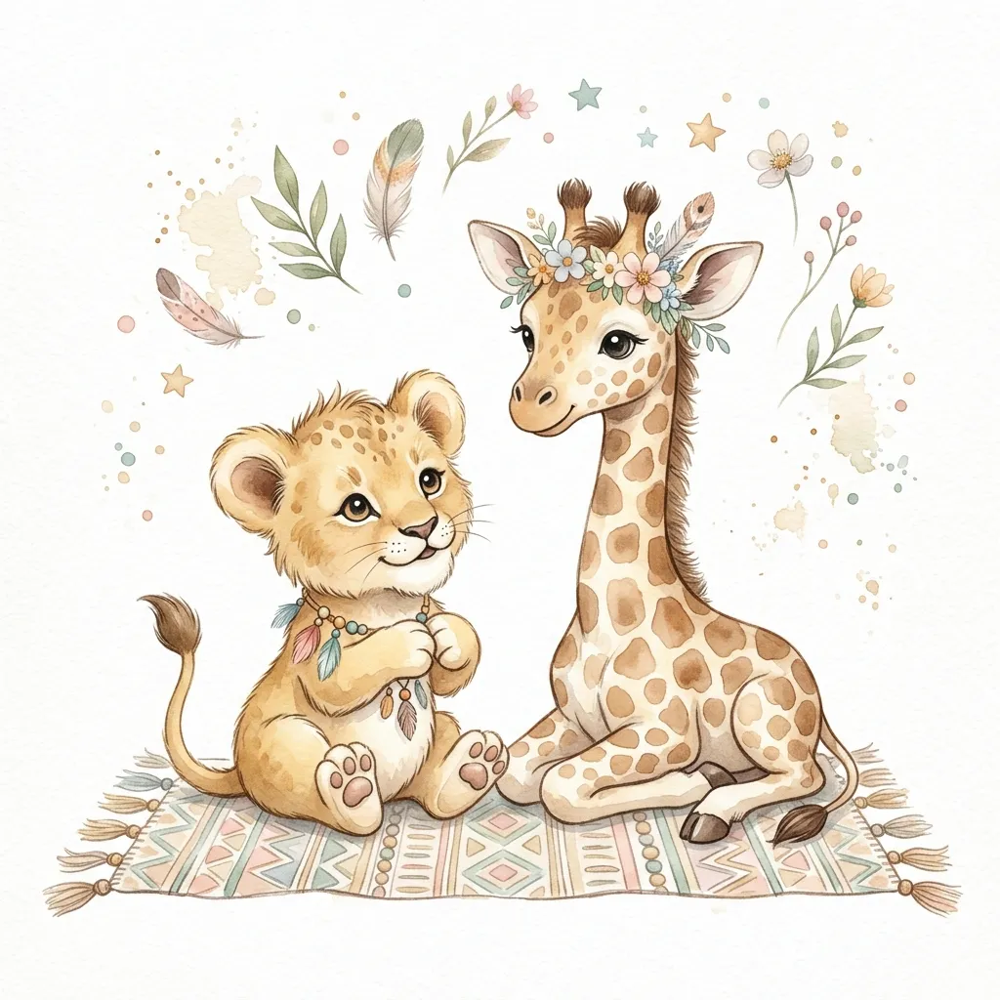
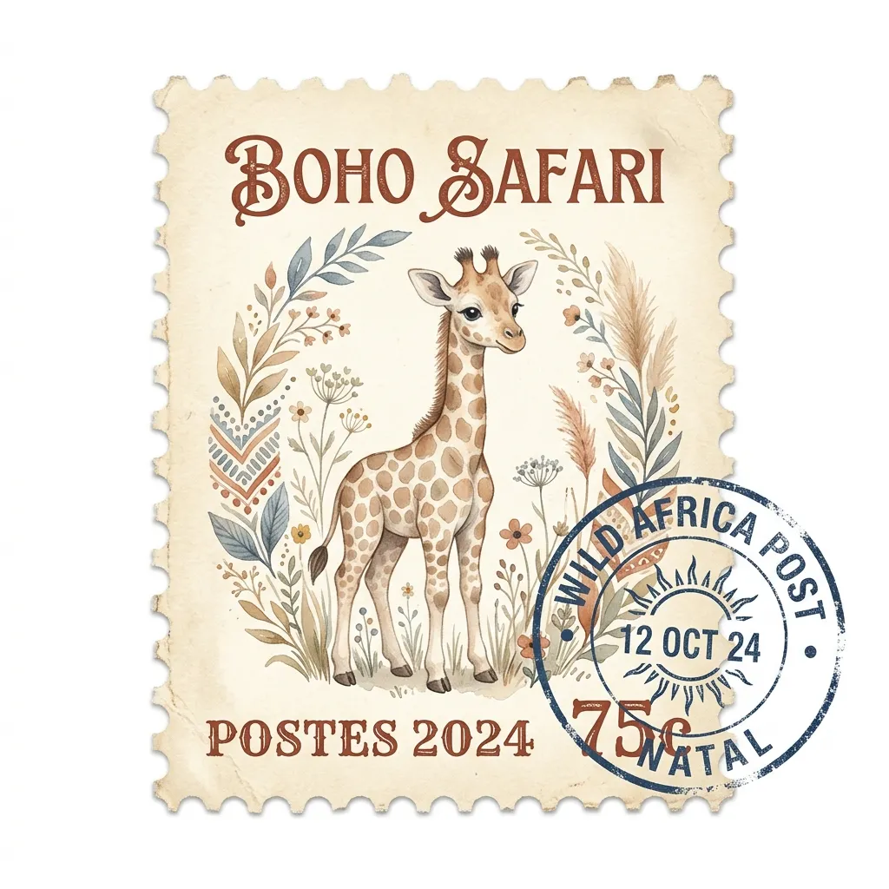
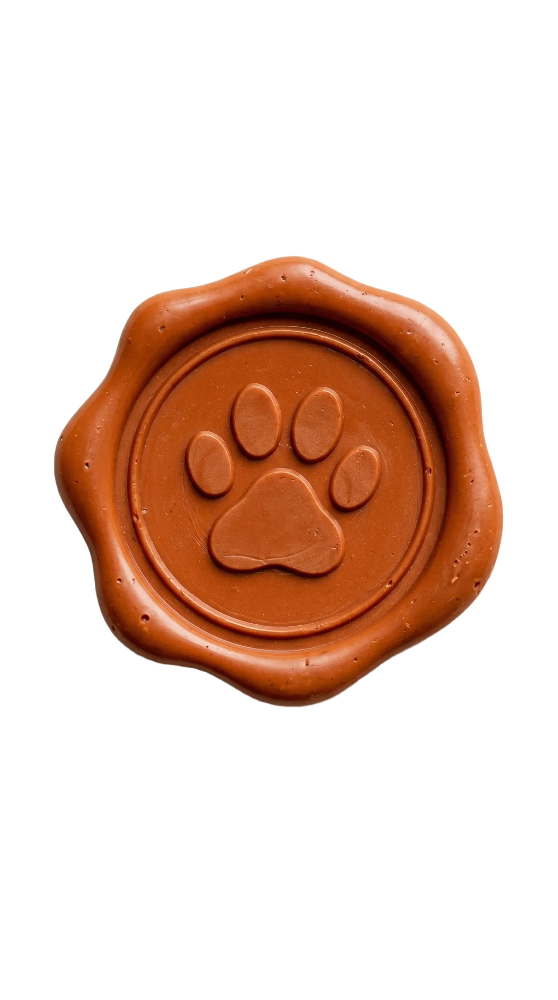
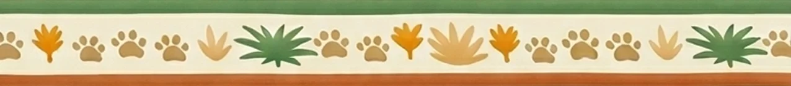

Вас ждут незабываемые приключения в мире диких джунглей!



Приглашаем вас в увлекательное путешествие по диким джунглям!
Wild One Birthday
Изменение ответа доступно до 5 августа 2026.
Пожалуйста, ответьте до 5 августа 2026